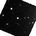
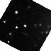

A
Flag screen passedEarlier observation

6 arcmin field Catalog prediction DR1 · Detector 3
SPHEREx investigation 01 / Fair comparisons
Two pictures can look different for more than one reason. Let’s find out which.
12 light-years away
Unresolved in these images

6 arcmin field
6 arcmin fieldFive months apart. Both record almost the same infrared color, so A + B passes the first check for a fair comparison.
The independent science check found no problem flags within 2.5 pixels of the predicted target position in these three source frames. That does not prove a detection or measure brightness.
Known limitsA and B come from different data releases. These previews are resampled and contrast-stretched. A brightness claim needs calibrated photometry.
Reading the imageThe ring marks a catalog prediction. Hatched corners have no retained cutout coverage. The two brown dwarfs appear as one point.
Each image can be traced back to its original SPHEREx observation.
| Frame | Date (UTC) | Wavelength | Original data |
|---|
Fixed 72 × 72 grid at 5 arcsec/pixel. Bilinear resampling of IMAGE − ZODI, with one shared linear display stretch. For visual inspection only.
Open the complete provenance record ↗This reference uses three verified local observations. Live coordinate search belongs to the integrated app.